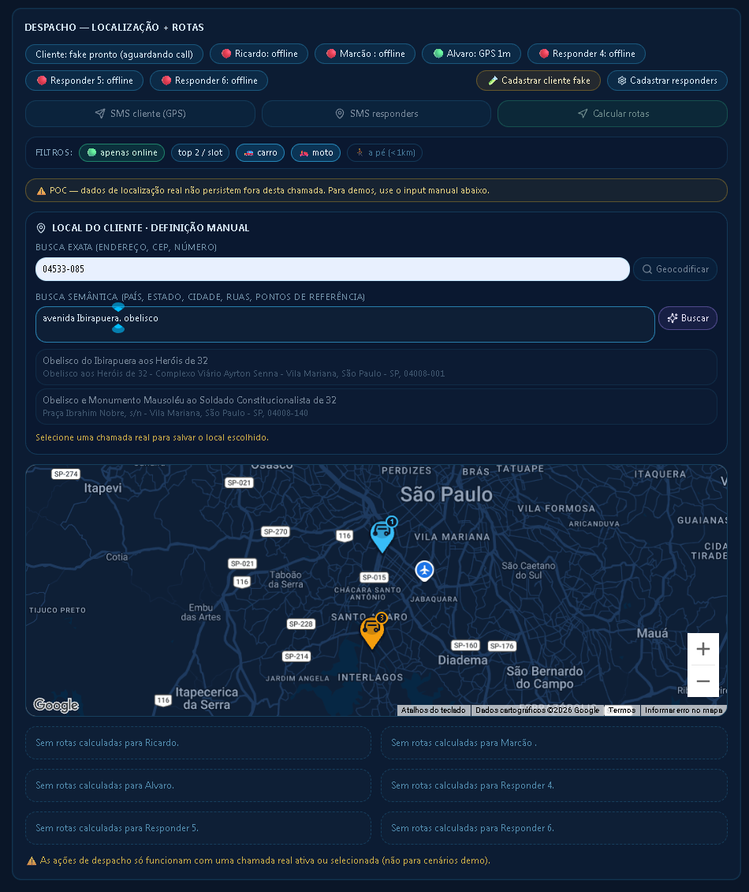
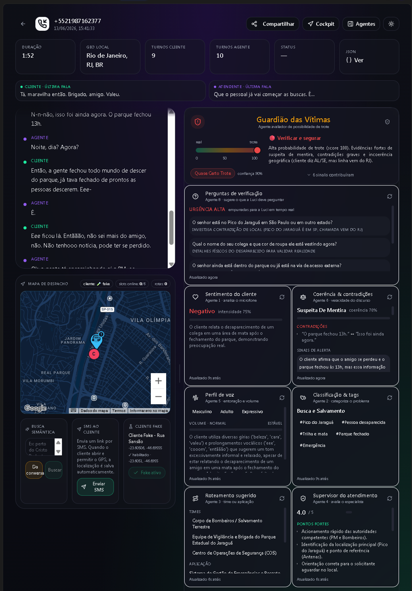

<!doctype html>
<html lang="pt-BR">
  <head>
    <meta charset="UTF-8" />
    <meta name="viewport" content="width=device-width, initial-scale=1.0" />
    <title>VOXMAP — Inteligência • Localização • Ação</title>
    <script src="https://cdn.tailwindcss.com"></script>
    <link href="https://unpkg.com/aos@2.3.1/dist/aos.css" rel="stylesheet" />
    <script src="https://unpkg.com/aos@2.3.1/dist/aos.js"></script>
    <script src="https://unpkg.com/lucide@latest"></script>
    <script src="https://d3js.org/d3.v7.min.js"></script>
    <link rel="preconnect" href="https://fonts.googleapis.com" />
    <link rel="preconnect" href="https://fonts.gstatic.com" crossorigin />
    <link
      href="https://fonts.googleapis.com/css2?family=Inter:wght@300;400;600;700;900&display=swap"
      rel="stylesheet"
    />
    <style>
      /* @MIRA:THEME:START */
      :root {
        --mira-primary: #2563eb;
        --mira-bg: #000000;
        --mira-text: #ffffff;
        --mira-text-soft: rgba(255, 255, 255, 0.7);
        --mira-text-softer: rgba(255, 255, 255, 0.5);
        --mira-card-bg: rgba(255, 255, 255, 0.05);
        --mira-card-border: rgba(255, 255, 255, 0.1);
        --mira-glow-soft: rgba(37, 99, 235, 0.15);
        --mira-glow-strong: rgba(37, 99, 235, 0.25);
        --mira-icon-bg: rgba(37, 99, 235, 0.15);
        --mira-icon-border: rgba(37, 99, 235, 0.3);
        --mira-pill-bg: rgba(255, 255, 255, 0.04);
        --mira-pill-border: rgba(255, 255, 255, 0.08);
        --mira-stage-glow: rgba(37, 99, 235, 0.06);
        --mira-accent-2: #719af2;
      }
      /* @MIRA:THEME:END */

      body {
        background: var(--mira-bg);
        min-height: 100vh;
        color: var(--mira-text);
        font-family: "Inter", sans-serif;
      }
      .primary-color {
        color: var(--mira-primary);
      }
      .glass-card {
        background: var(--mira-card-bg);
        backdrop-filter: blur(10px);
        border: 1px solid var(--mira-card-border);
        box-shadow: 0 10px 30px var(--mira-glow-soft);
        transition: all 0.3s ease;
        border-radius: 0.75rem;
      }
      .glass-card:hover {
        transform: translateY(-8px);
        box-shadow: 0 20px 40px var(--mira-glow-strong);
      }
      .icon-hero {
        width: 48px;
        height: 48px;
        border-radius: 14px;
        display: flex;
        align-items: center;
        justify-content: center;
        background: var(--mira-icon-bg);
        border: 1px solid var(--mira-icon-border);
      }
      .attribute-pill {
        background: var(--mira-pill-bg);
        border: 1px solid var(--mira-pill-border);
        transition: all 0.25s ease;
        border-radius: 9999px;
      }
      .attribute-pill:hover {
        background: var(--mira-icon-bg);
        border-color: var(--mira-icon-border);
        transform: translateY(-3px);
      }
      .anim-stage {
        width: 100%;
        height: clamp(400px, 60vh, 620px);
        background: radial-gradient(
          circle at 50% 50%,
          var(--mira-stage-glow),
          transparent 70%
        );
        border-radius: 8px;
        overflow: hidden;
        position: relative;
      }
      .anim-stage svg {
        display: block;
        width: 100%;
        height: 100%;
      }
      .replay-btn {
        position: absolute;
        top: 12px;
        right: 12px;
        z-index: 10;
        background: var(--mira-pill-bg);
        border: 1px solid var(--mira-pill-border);
        color: var(--mira-text-soft);
        border-radius: 9999px;
        padding: 6px 14px;
        font-size: 12px;
        cursor: pointer;
        transition: all 0.25s ease;
      }
      .replay-btn:hover {
        background: var(--mira-icon-bg);
        color: var(--mira-primary);
      }
      .text-soft {
        color: var(--mira-text-soft);
      }
      .text-softer {
        color: var(--mira-text-softer);
      }
      @keyframes mira-pulse {
        0%,
        100% {
          transform: scale(1);
          opacity: 1;
        }
        50% {
          transform: scale(1.08);
          opacity: 0.85;
        }
      }

      #mira-progress {
        position: fixed;
        top: 0;
        left: 0;
        height: 3px;
        width: 0%;
        background: linear-gradient(
          90deg,
          var(--mira-primary),
          var(--mira-accent-2),
          var(--mira-primary)
        );
        background-size: 200% 100%;
        animation: mira-shimmer 2s linear infinite;
        z-index: 9999;
        transition: width 0.1s linear;
        box-shadow: 0 0 10px var(--mira-glow-strong);
      }
      @keyframes mira-shimmer {
        0% {
          background-position: 200% 0;
        }
        100% {
          background-position: -200% 0;
        }
      }
      #mira-next {
        position: fixed;
        bottom: 32px;
        right: 32px;
        width: 48px;
        height: 48px;
        border-radius: 50%;
        background: var(--mira-primary);
        color: var(--mira-bg);
        display: flex;
        align-items: center;
        justify-content: center;
        cursor: pointer;
        border: none;
        opacity: 0;
        transform: translateY(20px);
        transition: all 0.3s ease;
        z-index: 9998;
        box-shadow: 0 4px 20px var(--mira-glow-strong);
      }
      #mira-next.visible {
        opacity: 1;
        transform: translateY(0);
      }
    </style>
  </head>
  <body>
    <div id="mira-progress"></div>
    <button id="mira-next">
      <i id="mira-next-icon" data-lucide="chevron-down" class="w-5 h-5"></i>
    </button>
  </body>
</html>

<!-- ═══════════════════ SLIDE 1: CAPA ═══════════════════ -->
<section
  class="min-h-screen flex flex-col items-center justify-center relative overflow-hidden px-6"
>
  <div id="capa-stage" class="absolute inset-0 pointer-events-none"></div>
  <div class="relative z-10 text-center max-w-4xl" data-aos="fade-up">
    <p
      class="attribute-pill inline-block px-5 py-2 text-sm tracking-widest uppercase text-soft mb-8"
    >
      Segurança Inteligente
    </p>
    <h1 class="text-6xl md:text-7xl font-black leading-tight mb-6">
      <span class="primary-color">VOXMAP</span>
    </h1>
    <p
      class="text-2xl font-light tracking-wider uppercase mb-4"
      style="letter-spacing: 4px"
    >
      Inteligência • Localização • Ação
    </p>
    <p class="text-xl text-soft max-w-2xl mx-auto mb-10">
      O futuro da Segurança Pública em tempo real.
    </p>
  </div>
  <script>
    (function () {
      const stage = d3.select("#capa-stage");
      const W = window.innerWidth,
        H = window.innerHeight;
      const svg = stage
        .append("svg")
        .attr("viewBox", `0 0 ${W} ${H}`)
        .style("position", "absolute");
      const cx = W / 2,
        cy = H / 2;
      const primary = getComputedStyle(document.documentElement)
        .getPropertyValue("--mira-primary")
        .trim();
      const particles = d3.range(30).map((i) => ({
        r: 160 + Math.random() * Math.min(W, H) * 0.38,
        angle: Math.random() * Math.PI * 2,
        speed: 0.0015 + Math.random() * 0.004,
        size: 1.5 + Math.random() * 3,
      }));
      const dots = svg
        .selectAll("circle")
        .data(particles)
        .join("circle")
        .attr("r", (d) => d.size)
        .attr("fill", primary)
        .attr("opacity", 0.3);
      d3.timer(() => {
        dots
          .attr("cx", (d) => {
            d.angle += d.speed;
            return cx + Math.cos(d.angle) * d.r;
          })
          .attr("cy", (d) => cy + Math.sin(d.angle) * d.r * 0.55);
      });
    })();
  </script>
</section>

<!-- ═══════════════════ SLIDE 2: FLUXO — A IA Que Ouve o Invisível ═══════════════════ -->
<section
  class="min-h-screen flex flex-col items-center justify-center px-6 py-16"
>
  <div class="text-center mb-10" data-aos="fade-up">
    <div class="flex items-center justify-center gap-4">
      <div class="icon-hero">
        <i data-lucide="ear" class="primary-color w-6 h-6"></i>
      </div>
      <h2 class="text-5xl font-black">A IA Que Ouve o Invisível</h2>
    </div>
    <p class="text-soft text-lg mt-3">
      Classificação automática por tom, urgência e confiança
    </p>
  </div>
  <div class="glass-card w-full max-w-5xl p-8 relative" data-aos="fade-up">
    <button
      class="replay-btn"
      onclick="window.__fluxoReplay && window.__fluxoReplay()"
    >
      ↻ replay
    </button>
    <div id="fluxo-stage" class="anim-stage"></div>
  </div>
  <div class="flex flex-wrap justify-center gap-3 mt-8" data-aos="fade-up">
    <span class="attribute-pill px-4 py-2 text-sm">Análise de Urgência</span>
    <span class="attribute-pill px-4 py-2 text-sm">Filtro Anti-Trote</span>
    <span class="attribute-pill px-4 py-2 text-sm">Apoio à Decisão</span>
    <span class="attribute-pill px-4 py-2 text-sm">Eficiência Operacional</span>
  </div>
  <script>
    (function () {
      const ETAPAS = ["Escuta", "Classifica", "Pontua", "Registra"];
      const stage = d3.select("#fluxo-stage");
      const W = 960,
        H = 540;
      const svg = stage.append("svg").attr("viewBox", `0 0 ${W} ${H}`);
      const primary = getComputedStyle(document.documentElement)
        .getPropertyValue("--mira-primary")
        .trim();
      const xs = d3
        .scalePoint()
        .domain(d3.range(ETAPAS.length))
        .range([120, W - 120]);
      const cy = H / 2;
      svg
        .append("line")
        .attr("x1", xs(0))
        .attr("x2", xs(ETAPAS.length - 1))
        .attr("y1", cy)
        .attr("y2", cy)
        .attr("stroke", "rgba(255,255,255,0.12)")
        .attr("stroke-width", 2);
      const nodes = svg
        .selectAll("g.node")
        .data(ETAPAS)
        .join("g")
        .attr("transform", (d, i) => `translate(${xs(i)},${cy})`);
      nodes
        .append("circle")
        .attr("r", 0)
        .attr("fill", "rgba(255,255,255,0.06)")
        .attr("stroke", primary)
        .attr("stroke-width", 2)
        .transition()
        .delay((d, i) => 300 + i * 250)
        .duration(600)
        .ease(d3.easeBackOut)
        .attr("r", 34);
      nodes
        .append("text")
        .text((d, i) => i + 1)
        .attr("text-anchor", "middle")
        .attr("dy", 6)
        .attr("fill", primary)
        .attr("font-size", 20)
        .attr("font-weight", 800)
        .attr("opacity", 0)
        .transition()
        .delay((d, i) => 600 + i * 250)
        .attr("opacity", 1);
      nodes
        .append("text")
        .text((d) => d)
        .attr("text-anchor", "middle")
        .attr("dy", 70)
        .attr("fill", "rgba(255,255,255,0.7)")
        .attr("font-size", 16)
        .attr("opacity", 0)
        .transition()
        .delay((d, i) => 700 + i * 250)
        .attr("opacity", 1);
      const particle = svg
        .append("circle")
        .attr("r", 7)
        .attr("fill", primary)
        .attr("cy", cy)
        .attr("cx", xs(0))
        .style("filter", `drop-shadow(0 0 8px ${primary})`);
      function travel() {
        particle
          .attr("cx", xs(0))
          .attr("opacity", 1)
          .transition()
          .duration(3200)
          .ease(d3.easeCubicInOut)
          .attr("cx", xs(ETAPAS.length - 1))
          .transition()
          .duration(300)
          .attr("opacity", 0)
          .on("end", travel);
      }
      travel();
      d3.interval(() => {
        nodes
          .selectAll("circle")
          .transition()
          .delay((d, i) => i * 200)
          .duration(350)
          .attr("r", 39)
          .transition()
          .duration(350)
          .attr("r", 34);
      }, 3500);
      window.__fluxoReplay = travel;
    })();
  </script>
</section>

<!-- ═══════════════════ SLIDE 3: ORBITAL — Cada Segundo no Mapa ═══════════════════ -->
<section
  class="min-h-screen flex flex-col items-center justify-center px-6 py-16"
>
  <div class="text-center mb-10" data-aos="fade-up">
    <h2 class="text-5xl font-black">Cada Segundo no Mapa</h2>
    <p class="text-soft text-lg mt-3">
      Localização precisa, frota em tempo real, rotas otimizadas
    </p>
  </div>
  <div class="glass-card w-full max-w-5xl p-8 relative" data-aos="fade-up">
    <div id="orbital-stage" class="anim-stage"></div>
  </div>
  <div class="flex flex-wrap justify-center gap-3 mt-8" data-aos="fade-up">
    <span class="attribute-pill px-4 py-2 text-sm">GPS Automático</span>
    <span class="attribute-pill px-4 py-2 text-sm">Visão de Frota</span>
    <span class="attribute-pill px-4 py-2 text-sm">Gestão de Ocorrências</span>
    <span class="attribute-pill px-4 py-2 text-sm">AML Nativo</span>
  </div>
  <script>
    (function () {
      const CENTRO = "VOXMAP";
      const SATELITES = ["GPS", "Frota", "Rotas", "AML", "Mapa"];
      const stage = d3.select("#orbital-stage");
      const W = 960,
        H = 540;
      const svg = stage.append("svg").attr("viewBox", `0 0 ${W} ${H}`);
      const primary = getComputedStyle(document.documentElement)
        .getPropertyValue("--mira-primary")
        .trim();
      const cx = W / 2,
        cy = H / 2,
        R = 190;
      svg
        .append("ellipse")
        .attr("cx", cx)
        .attr("cy", cy)
        .attr("rx", R)
        .attr("ry", R * 0.62)
        .attr("fill", "none")
        .attr("stroke", "rgba(255,255,255,0.10)")
        .attr("stroke-dasharray", "4 6");
      const core = svg.append("g").attr("transform", `translate(${cx},${cy})`);
      core
        .append("circle")
        .attr("r", 0)
        .attr("fill", "rgba(255,255,255,0.06)")
        .attr("stroke", primary)
        .attr("stroke-width", 2.5)
        .transition()
        .duration(800)
        .ease(d3.easeBackOut)
        .attr("r", 64);
      core
        .append("text")
        .text(CENTRO)
        .attr("text-anchor", "middle")
        .attr("dy", 6)
        .attr("fill", primary)
        .attr("font-size", 18)
        .attr("font-weight", 800)
        .attr("opacity", 0)
        .transition()
        .delay(500)
        .attr("opacity", 1);
      const pulse = core
        .append("circle")
        .attr("r", 64)
        .attr("fill", "none")
        .attr("stroke", primary)
        .attr("opacity", 0);
      d3.interval(() => {
        pulse
          .attr("r", 64)
          .attr("opacity", 0.6)
          .transition()
          .duration(1600)
          .ease(d3.easeCubicOut)
          .attr("r", 110)
          .attr("opacity", 0);
      }, 2000);
      const sats = svg
        .selectAll("g.sat")
        .data(
          SATELITES.map((s, i) => ({
            label: s,
            angle: (i / SATELITES.length) * Math.PI * 2,
          })),
        )
        .join("g")
        .attr("class", "sat");
      sats
        .append("circle")
        .attr("r", 0)
        .attr("fill", "rgba(255,255,255,0.08)")
        .attr("stroke", primary)
        .attr("stroke-opacity", 0.5)
        .transition()
        .delay((d, i) => 800 + i * 150)
        .duration(500)
        .ease(d3.easeBackOut)
        .attr("r", 30);
      sats
        .append("text")
        .text((d) => d.label)
        .attr("text-anchor", "middle")
        .attr("dy", 4)
        .attr("fill", "rgba(255,255,255,0.85)")
        .attr("font-size", 11)
        .attr("font-weight", 600)
        .attr("opacity", 0)
        .transition()
        .delay((d, i) => 1000 + i * 150)
        .attr("opacity", 1);
      d3.timer(() => {
        sats.attr("transform", (d) => {
          d.angle += 0.004;
          return `translate(${cx + Math.cos(d.angle) * R},${cy + Math.sin(d.angle) * R * 0.62})`;
        });
      });
    })();
  </script>
</section>

<!-- ═══════════════════ SLIDE 4: DESPACHO — Resposta no Território ═══════════════════ -->
<section class="min-h-screen flex flex-col items-center justify-center px-6 py-16">
    <div class="text-center mb-10" data-aos="fade-up">
        <div class="flex items-center justify-center gap-4">
            <div class="icon-hero"><i data-lucide="navigation" class="primary-color w-6 h-6"></i></div>
            <h2 class="text-5xl font-black">Resposta no Território</h2>
        </div>
        <p class="text-soft text-lg mt-3">Despacho inteligente com visão total do cenário</p>
    </div>
    <div class="grid md:grid-cols-2 gap-8 w-full max-w-5xl items-center">
        <div class="glass-card p-4 relative overflow-hidden geo-frame" data-aos="fade-right">
            
        </div>
        <div data-aos="fade-left">
            <ul class="space-y-5">
                <li class="flex gap-4 items-start">
                    <div class="icon-hero shrink-0"><i data-lucide="map-pin" class="primary-color w-5 h-5"></i></div>
                    <div><p class="font-bold text-lg">Localização Precisa</p><p class="text-soft text-sm">GPS móvel automático via AML no momento da chamada</p></div>
                </li>
                <li class="flex gap-4 items-start">
                    <div class="icon-hero shrink-0"><i data-lucide="truck" class="primary-color w-5 h-5"></i></div>
                    <div><p class="font-bold text-lg">Frota em Tempo Real</p><p class="text-soft text-sm">Rastreamento completo de viaturas e ambulâncias</p></div>
                </li>
                <li class="flex gap-4 items-start">
                    <div class="icon-hero shrink-0"><i data-lucide="route" class="primary-color w-5 h-5"></i></div>
                    <div><p class="font-bold text-lg">Rotas Otimizadas</p><p class="text-soft text-sm">Cálculo com tráfego em tempo real para menor tempo de chegada</p></div>
                </li>
                <li class="flex gap-4 items-start">
                    <div class="icon-hero shrink-0"><i data-lucide="shield-check" class="primary-color w-5 h-5"></i></div>
                    <div><p class="font-bold text-lg">Segurança AML</p><p class="text-soft text-sm">Dados de localização enviados automaticamente pelo smartphone</p></div>
                </li>
            </ul>
        </div>
    </div>
    <style>
    .geo-frame { animation: geo-glow 3s ease-in-out infinite; }
    @keyframes geo-glow {
        0%, 100% { box-shadow: 0 10px 30px var(--mira-glow-soft); border-color: var(--mira-card-border); }
        50% { box-shadow: 0 20px 60px var(--mira-glow-strong), inset 0 0 20px var(--mira-stage-glow); border-color: var(--mira-icon-border); }
    }
    </style>
</section>

<!-- ═══════════════════ SLIDE 5: ESCADA — A Voz Não Mente ═══════════════════ -->
<section
  class="min-h-screen flex flex-col items-center justify-center px-6 py-16"
>
  <div class="text-center mb-10" data-aos="fade-up">
    <h2 class="text-5xl font-black">A Voz Não Mente</h2>
    <p class="text-soft text-lg mt-3">Quatro camadas de segurança no áudio</p>
  </div>
  <div class="glass-card w-full max-w-5xl p-8 relative" data-aos="fade-up">
    <button
      class="replay-btn"
      onclick="window.__escadaReplay && window.__escadaReplay()"
    >
      ↻ replay
    </button>
    <div id="escada-stage" class="anim-stage"></div>
  </div>
  <script>
    (function () {
      const DEGRAUS = ["Biometria", "Marca d'Água", "Anti-Deepfake", "Forense"];
      const stage = d3.select("#escada-stage");
      const W = 960,
        H = 540;
      const svg = stage.append("svg").attr("viewBox", `0 0 ${W} ${H}`);
      const primary = getComputedStyle(document.documentElement)
        .getPropertyValue("--mira-primary")
        .trim();
      const stepW = 170,
        stepH = 80;
      const baseX = 90,
        baseY = H - 90;
      const steps = DEGRAUS.map((d, i) => ({
        label: d,
        x: baseX + i * stepW,
        y: baseY - (i + 1) * stepH,
      }));
      svg
        .selectAll("rect.step")
        .data(steps)
        .join("rect")
        .attr("class", "step")
        .attr("x", (d) => d.x)
        .attr("y", baseY)
        .attr("width", stepW - 14)
        .attr("height", 0)
        .attr("rx", 8)
        .attr("fill", "rgba(255,255,255,0.06)")
        .attr("stroke", primary)
        .attr("stroke-opacity", 0.4)
        .transition()
        .delay((d, i) => 300 + i * 220)
        .duration(600)
        .ease(d3.easeCubicOut)
        .attr("y", (d) => d.y)
        .attr("height", (d) => baseY - d.y);
      svg
        .selectAll("text.label")
        .data(steps)
        .join("text")
        .attr("class", "label")
        .attr("x", (d) => d.x + (stepW - 14) / 2)
        .attr("y", (d) => d.y + 30)
        .attr("text-anchor", "middle")
        .attr("fill", "rgba(255,255,255,0.85)")
        .attr("font-size", 15)
        .attr("font-weight", 700)
        .text((d) => d.label)
        .attr("opacity", 0)
        .transition()
        .delay((d, i) => 700 + i * 220)
        .attr("opacity", 1);
      const orb = svg
        .append("circle")
        .attr("r", 12)
        .attr("fill", primary)
        .style("filter", `drop-shadow(0 0 10px ${primary})`);
      function climb() {
        orb
          .attr("cx", steps[0].x + (stepW - 14) / 2)
          .attr("cy", baseY - 14)
          .attr("opacity", 1);
        let t = orb.transition().duration(400);
        steps.forEach((s) => {
          t = t
            .transition()
            .duration(700)
            .ease(d3.easeBounceOut)
            .attr("cx", s.x + (stepW - 14) / 2)
            .attr("cy", s.y - 16);
        });
        t.transition()
          .delay(500)
          .duration(400)
          .attr("opacity", 0)
          .on("end", climb);
      }
      setTimeout(climb, 1400);
      window.__escadaReplay = climb;
    })();
  </script>
</section>

<!-- ═══════════════════ SLIDE 6: COMPARAÇÃO — O Silêncio Que Grita ═══════════════════ -->
<section
  class="min-h-screen flex flex-col items-center justify-center px-6 py-16"
>
  <div class="text-center mb-12" data-aos="fade-up">
    <h2 class="text-5xl font-black">O Silêncio Que Grita</h2>
    <p class="text-soft text-lg mt-3">
      Onde a tecnologia encontra a sensibilidade humana
    </p>
  </div>
  <div class="grid md:grid-cols-2 gap-8 w-full max-w-5xl items-stretch">
    <div
      id="versus-a"
      class="glass-card p-10 transition-all duration-700"
      data-aos="fade-right"
    >
      <div class="icon-hero mb-6">
        <i data-lucide="cpu" class="primary-color w-6 h-6"></i>
      </div>
      <h3 class="text-3xl font-bold mb-4">IA Cognitiva</h3>
      <ul class="space-y-3 text-soft">
        <li class="flex gap-3">
          <i data-lucide="check" class="primary-color w-5 h-5 shrink-0"></i>
          Detecta padrões de coação no áudio
        </li>
        <li class="flex gap-3">
          <i data-lucide="check" class="primary-color w-5 h-5 shrink-0"></i>
          Analisa sons ambientais críticos
        </li>
        <li class="flex gap-3">
          <i data-lucide="check" class="primary-color w-5 h-5 shrink-0"></i>
          Alerta para o "não dito"
        </li>
      </ul>
    </div>
    <div
      id="versus-b"
      class="glass-card p-10 transition-all duration-700"
      data-aos="fade-left"
    >
      <div class="icon-hero mb-6">
        <i data-lucide="heart-handshake" class="primary-color w-6 h-6"></i>
      </div>
      <h3 class="text-3xl font-bold mb-4">Sensibilidade Humana</h3>
      <ul class="space-y-3 text-soft">
        <li class="flex gap-3">
          <i data-lucide="check" class="primary-color w-5 h-5 shrink-0"></i>
          Empatia e acolhimento da vítima
        </li>
        <li class="flex gap-3">
          <i data-lucide="check" class="primary-color w-5 h-5 shrink-0"></i>
          Estratégia de abordagem segura
        </li>
        <li class="flex gap-3">
          <i data-lucide="check" class="primary-color w-5 h-5 shrink-0"></i>
          Decisão final com contexto humano
        </li>
      </ul>
    </div>
  </div>
  <p class="text-softer mt-10 text-center max-w-2xl" data-aos="fade-up">
    A união entre homem e máquina salvando vítimas de violência silenciosa.
  </p>
  <script>
    (function () {
      const a = document.getElementById("versus-a");
      const b = document.getElementById("versus-b");
      let turn = true;
      setInterval(() => {
        const on = turn ? a : b,
          off = turn ? b : a;
        on.style.transform = "translateY(-8px) scale(1.02)";
        on.style.boxShadow = "0 20px 50px var(--mira-glow-strong)";
        off.style.transform = "none";
        off.style.boxShadow = "0 10px 30px var(--mira-glow-soft)";
        turn = !turn;
      }, 2500);
    })();
  </script>
</section>

<!-- ═══════════════════ SLIDE 7: COCKPIT — Plataforma Operacional ═══════════════════ -->
<section class="min-h-screen flex flex-col items-center justify-center px-6 py-16">
    <div class="text-center mb-10" data-aos="fade-up">
        <div class="flex items-center justify-center gap-4">
            <div class="icon-hero"><i data-lucide="monitor" class="primary-color w-6 h-6"></i></div>
            <h2 class="text-5xl font-black">Cockpit Inteligente</h2>
        </div>
        <p class="text-soft text-lg mt-3">Gestão e triagem de emergências em uma única tela</p>
    </div>
    <div class="glass-card w-full max-w-5xl p-4 relative overflow-hidden cockpit-frame" data-aos="zoom-in">
        
    </div>
    <div class="flex flex-wrap justify-center gap-3 mt-8" data-aos="fade-up">
        <span class="attribute-pill px-4 py-2 text-sm">Triagem ao Vivo</span>
        <span class="attribute-pill px-4 py-2 text-sm">Despacho GPS</span>
        <span class="attribute-pill px-4 py-2 text-sm">Análise Cognitiva</span>
    </div>
    <style>
    .cockpit-frame { animation: cockpit-glow 3s ease-in-out infinite; }
    @keyframes cockpit-glow {
        0%, 100% { box-shadow: 0 10px 30px var(--mira-glow-soft); border-color: var(--mira-card-border); }
        50% { box-shadow: 0 20px 60px var(--mira-glow-strong), inset 0 0 30px var(--mira-stage-glow); border-color: var(--mira-icon-border); }
    }
    </style>
</section>

<!-- ═══════════════════ SLIDE 8: ENCERRAMENTO — O Futuro é VOXMAP ═══════════════════ -->
<section
  class="min-h-screen flex flex-col items-center justify-center relative overflow-hidden px-6"
>
  <div class="cta-breathe absolute inset-0 pointer-events-none"></div>
  <div class="relative z-10 text-center max-w-3xl" data-aos="zoom-in">
    <div
      class="icon-hero mx-auto mb-8"
      style="width: 72px; height: 72px; border-radius: 20px"
    >
      <i data-lucide="rocket" class="primary-color w-9 h-9"></i>
    </div>
    <h2 class="text-6xl font-black mb-6">
      O Futuro é <span class="primary-color">VOXMAP</span>
    </h2>
    <p class="text-xl text-soft mb-10">
      Transforme sua central de atendimento em uma unidade de inteligência
      tática.
    </p>
    <div class="flex flex-wrap items-center justify-center gap-4">
      <span class="attribute-pill px-6 py-3 text-base cursor-pointer"
        ><i data-lucide="play" class="inline w-4 h-4 mr-2 primary-color"></i
        >Demo</span
      >
    </div>
  </div>
  <style>
    .cta-breathe {
      background: radial-gradient(
        ellipse at 50% 60%,
        var(--mira-glow-strong),
        transparent 65%
      );
      animation: mira-pulse 4s ease-in-out infinite;
    }
  </style>
</section>

<!-- ═══════════════════ SCRIPTS GLOBAIS ═══════════════════ -->
<script>
AOS.init({ duration: 800, once: true });
lucide.createIcons();

// Navegação card-a-card
(function(){
    const cardSections = Array.from(document.querySelectorAll('body > section'));
    if (cardSections.length === 0) return;
    const progress = document.getElementById('mira-progress');
    const nextBtn = document.getElementById('mira-next');
    const nextIcon = document.getElementById('mira-next-icon');
    const atBottom = () => window.scrollY + window.innerHeight >= document.documentElement.scrollHeight - 100;
    function currentIndex(){
        const y = window.scrollY + window.innerHeight * 0.3;
        let idx = -1;
        for (let i = 0; i < cardSections.length; i++) { if (cardSections[i].offsetTop <= y) idx = i; }
        return idx;
    }
    function goTo(i){
        const idx = Math.max(0, Math.min(cardSections.length-1, i));
        cardSections[idx].scrollIntoView({ behavior: 'smooth', block: 'start' });
    }
    window.addEventListener('scroll', () => {
        const docH = document.documentElement.scrollHeight - window.innerHeight;
        progress.style.width = (docH > 0 ? (window.scrollY/docH)*100 : 0) + '%';
        nextBtn.classList.toggle('visible', window.scrollY > 300);
        nextIcon.setAttribute('data-lucide', atBottom() ? 'chevron-up' : 'chevron-down');
        lucide.createIcons();
    });
    nextBtn.addEventListener('click', () => {
        if (atBottom()){ window.scrollTo({top:0, behavior:'smooth'}); return; }
        goTo(currentIndex()+1);
    });
    document.addEventListener('keydown', e => {
        if (['ArrowRight','ArrowDown','PageDown'].includes(e.key)){ e.preventDefault(); goTo(currentIndex()+1); }
        else if (['ArrowLeft','ArrowUp','PageUp'].includes(e.key)){ e.preventDefault(); const idx=currentIndex(); if(idx<=0) window.scrollTo({top:0,behavior:'smooth'}); else goTo(idx-1); }
        else if (e.key==='Home'){ e.preventDefault(); window.scrollTo({top:0,behavior:'smooth'}); }
        else if (e.key==='End'){ e.preventDefault(); goTo(cardSections.length-1); }
        else if (e.key.toLowerCase()==='f'){ if(!document.fullscreenElement) document.documentElement.requestFullscreen(); else document.exitFullscreen(); }
    });
})();
</script>
</body>
</html>
